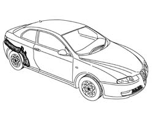
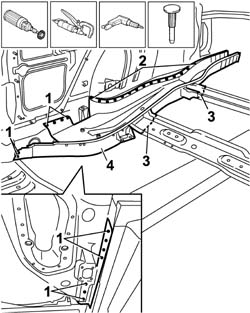
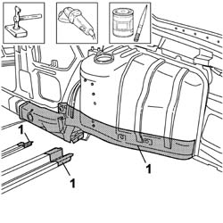
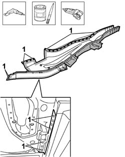
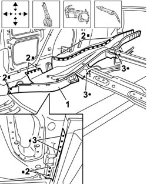
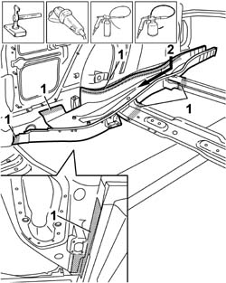
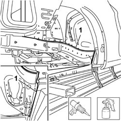

7210B60 R.R. BOOT FLOOR SIDE MEMBER
- Path
- Procedures > 72 PANELS AND FRAME > 7210 REMOVING REFITTING > 7210B STRUCTURE ELEMENTS-CENTRAL AND REAR PART > 7210B60 R.R. BOOT FLOOR SIDE MEMBER
- Kind
- repair procedure (removal / refitting; the operation number is the code)
- Applies to
- all engines; all production periods
- Interactive page
- https://sloeber94.github.io/elrnDB-aGt/en/#/125002044
Applies to: all engines; all production periods
 Removing
Removing
 Refitting
Refitting- Op. 7210B55 R.R. BOOT FLOOR
- Check that the components connected are not distorted by checking the bodyshell alignment measurements using suitable equipment (gauges, templates or jigs).
- Straighten the body as necessary.

Applies to: all engines; all production periods
- Use the rotary brush to clean the area to be chamfered to highlight the spot welds.
- Use the drill and chamfer the spot welds shown in the diagram.
- Use the chamfering machine to remove the spot welds shown in the diagram.
- Using a saw with a circular blade, cut the two boot floor supporting crossmembers following the cutting lines illustrated.
- Use a hammer and chisel to remove the boot floor side member from the vehicle.

Applies to: all engines; all production periods
- Straighten the edges of the panel using a hammer and dolly block.
- Remove the spot weld residues using a disc grinder.
- Apply electro-weldable paint to the areas shown in the diagram.

Applies to: all engines; all production periods
- Work at the bench and make holes using a drill at the points indicated in the diagram.
- Remove the anti-corrosion treatment from the entire area of the inside and outside of the replacement part illustrated.
- Apply the electro-weldable paint to the edges in contact with the vehicle.

Applies to: all engines; all production periods
Refitting
Removing1. Position the replacement part on the vehicle using self-locking clamps.
- Check that the alignment is perfect.
2. Use a MIG welder and weld the openings made previously in the replacement part.
3. Use the spot welder and work on the lower part of the side member and on the centre boot floor supporting crossmembers.

Applies to: all engines; all production periods
- Correct any distortions to the panel using a hammer and dolly block.
1. Use a disc grinder to remove and level the spot welds.
- Apply anti-oxidant protection to the areas involved in the welding.
2. Apply the wax based oil protection to the inside of the side member.

Applies to: all engines; all production periods
- Seal the join line indicated in the diagram between the side member and inner rear wheel arch.
- Proceed with the painting stage.

Applies to: all engines; all production periods